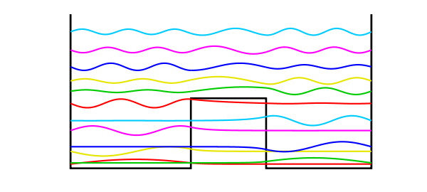
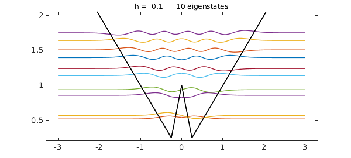

A well-known problem in quantum mechanics is the calculation of eigenstates of a potential with the shape of a "double well". Specifically, consider a potential function $V(x)$ defined on $[-1,1]$ by
$$ V(x) = 1.5, ~ x \in [-.2,.3], $$
and zero otherwise. We seek eigenmodes of the steady-state Schroedinger equation associated with this potential, specifically, functions $u(x)$ satisfying
$$ -0.007u''(x) + V(x)u(x) = \lambda u(x),~~ u(-1) = u(1) = 0 $$
for some constant $\lambda$.
We can sketch the potential like this:
LW = 'linewidth'; hold off plot([-1 -1 -.2 -.2 .3 .3 1 1],[3.3 0 0 1.5 1.5 0 0 3.3],'k',LW,3) axis([-1.1 1.1 -.05 3.3]), axis off, hold on

Let's compute the first 12 eigenvalues and eigenfunctions:
tic
x = chebfun('x');
V = 1.5*(abs(x-0.05)<0.25);
L = chebop(-1,1);
L.op = @(x,u) -0.007*diff(u,2) + V.*u;
L.bc = 0;
neigs = 12;
[EV,D] = eigs(L,neigs);
disp(diag(D)), toc
0.091480998228437 0.116757122003731 0.363909308596665 0.463167687390074 0.808941736698391 1.021145960783026 1.390812031497082 1.652575851344439 1.871230031208035 2.174488704531266 2.533176594992714 2.924094539796116 Elapsed time is 3.800695 seconds.
Physicists like to plot the eigenmodes shifted up by an amount equal to the eigenvalue:
colors = [1 0 0; 0 .8 0; .9 .9 0; 0 0 1; 1 0 1; 0 .8 1]; for j = 1:neigs v = EV(:,j)/15; d = D(j,j); if max(v)<-min(v), v = -v; end plot(d+v,LW,2,'color',colors(1+mod(j-1,6),:)) end

There is a great deal of such physics in such pictures. The lower eigenmodes correspond to particles trapped on one side or the other, with a state function decreasing exponentially within the barrier. At higher energies the particles are not localized.
The Chebfun command quantumstates allows one to carry out explorations like these much more easily.
clf, x = chebfun('x',[-3,3])
V = max(abs(x),1-3*abs(x));
quantumstates(V)
x =
chebfun column (1 smooth piece)
interval length endpoint values
[ -3, 3] 2 -3 3
Epslevel = 1.110223e-15. Vscale = 3.000000e+00.
ans =
0.519275627857416
0.568122999843643
0.857289324404975
0.936834938834818
1.137321404216796
1.238731857341000
1.395322337063561
1.505801742485282
1.638922632408591
1.750303602923950
